Ham notlar Product Research ↗
OG ve Knowie yan yana, el yazısı okla "Way cuter, right?". Amaç ikon değil, markayı ana ekrana taşımak.Translate / Explain / Solve, "Turn your notes into quizzes".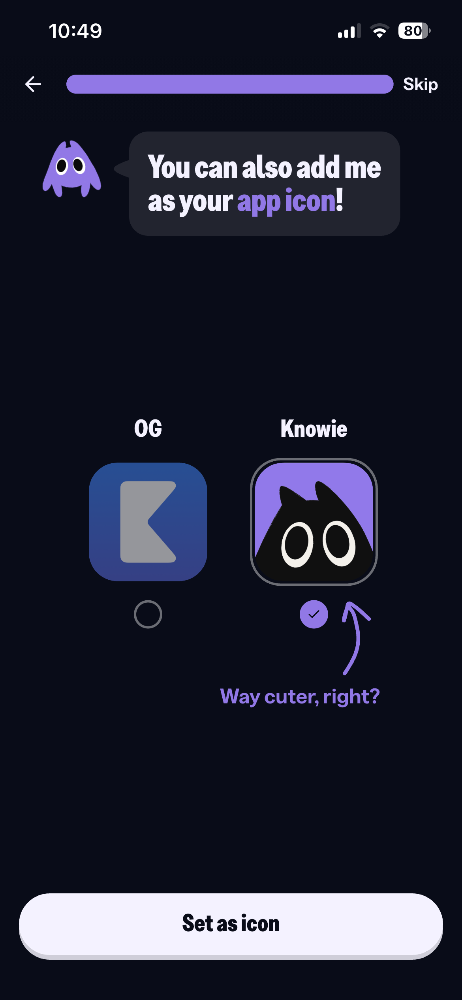
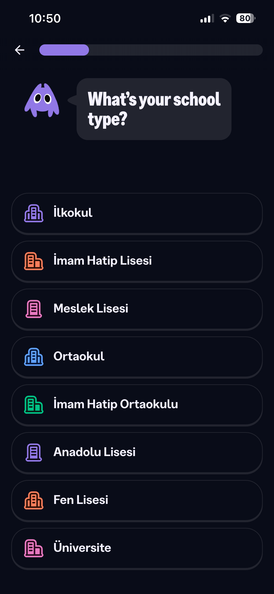
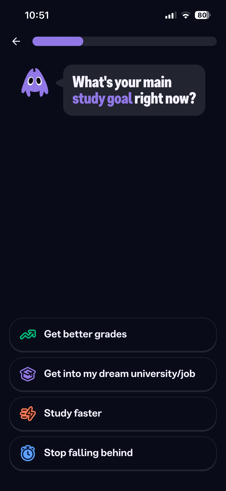
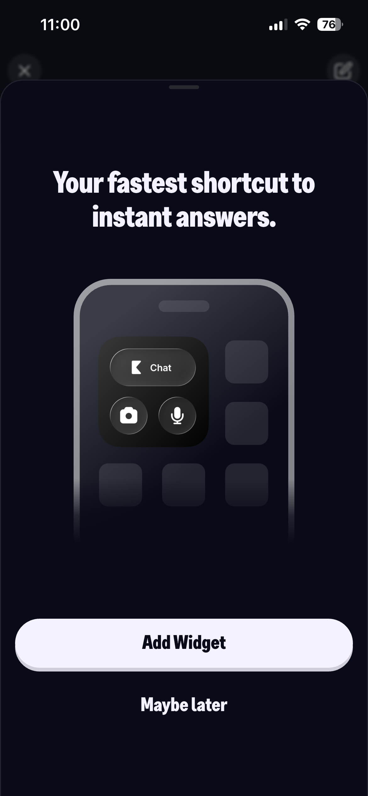
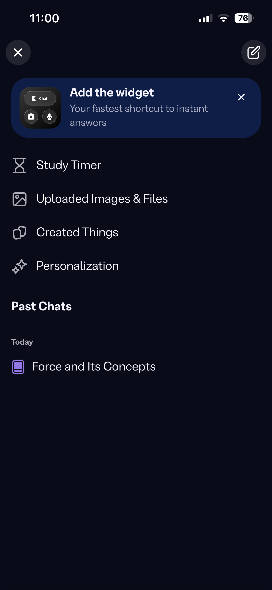
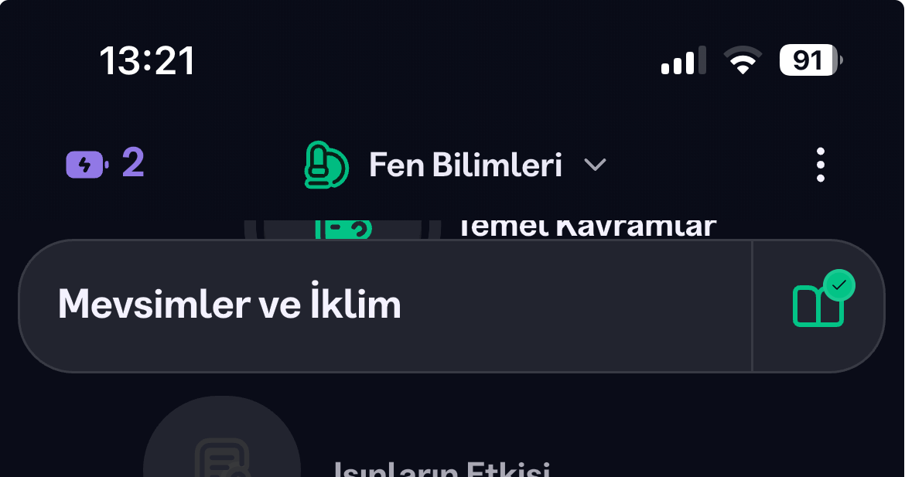
+, dolu mavi kamera, mikrofon ve ayrı bir "Konuş" butonu.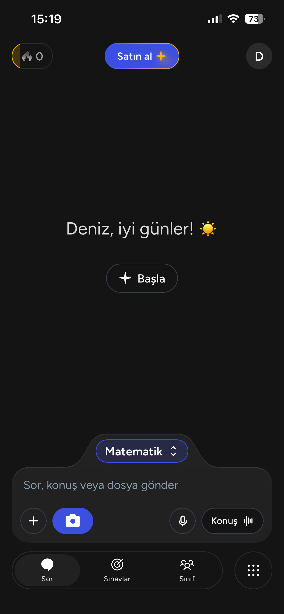
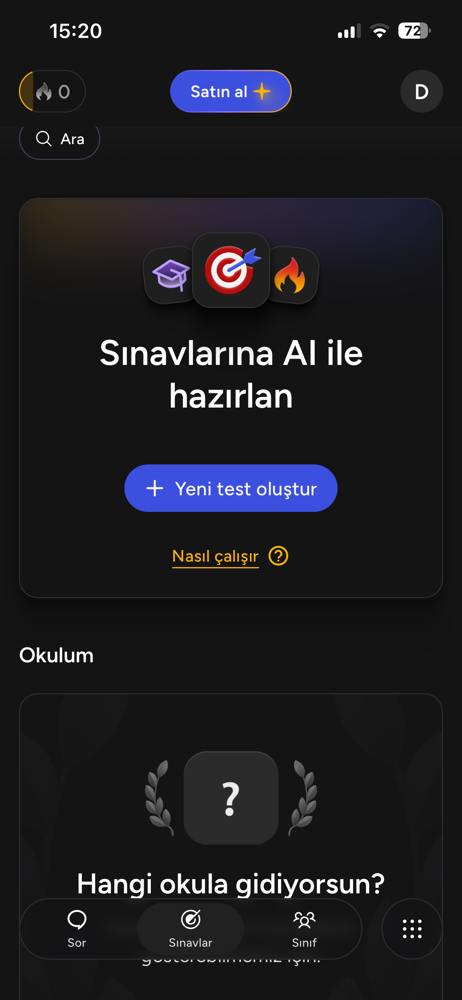
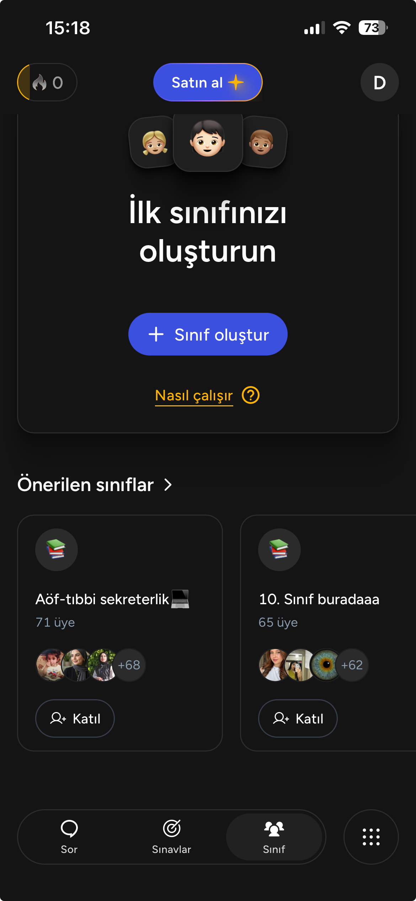
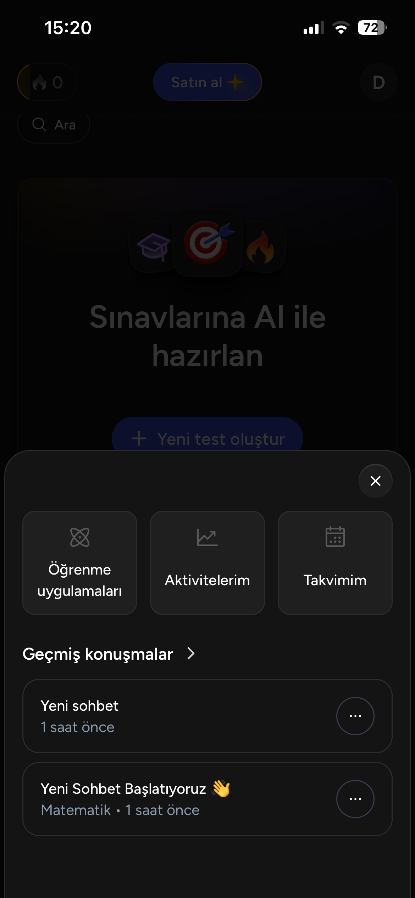
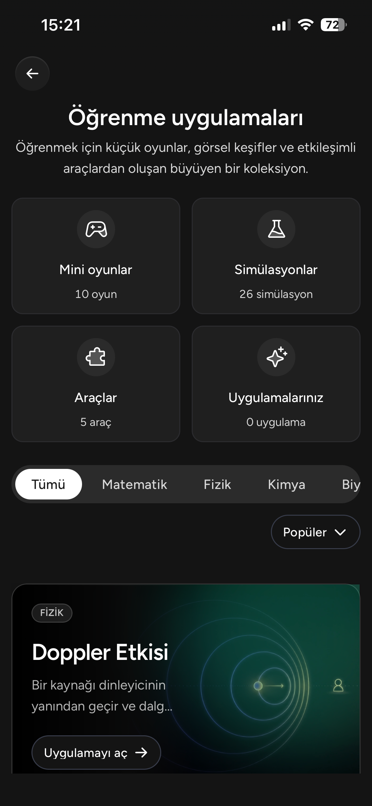
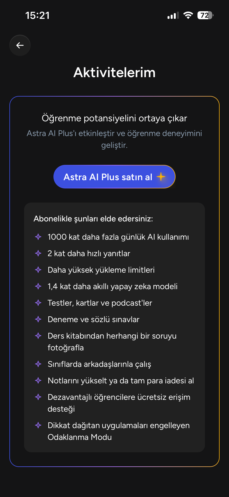
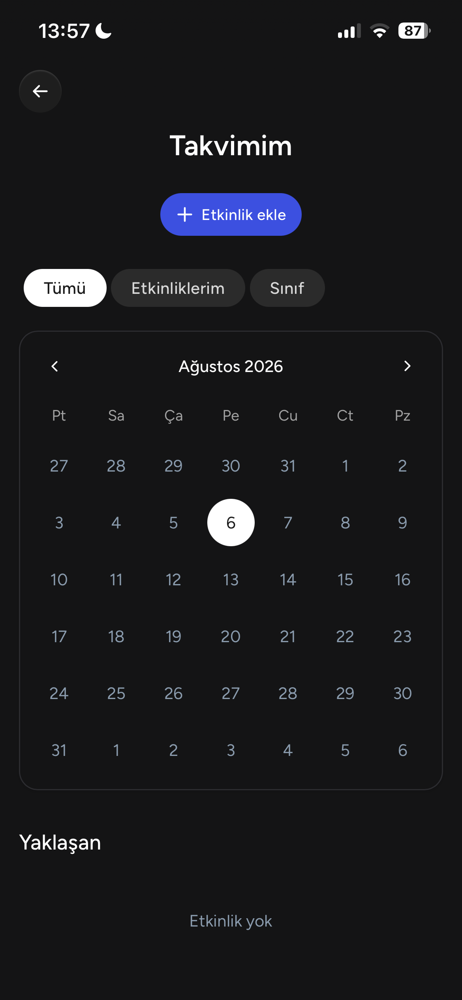
Recommended rozetli).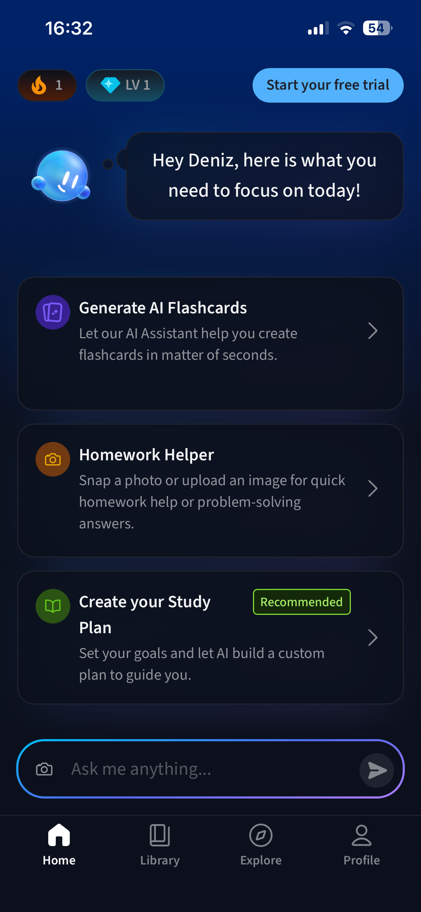
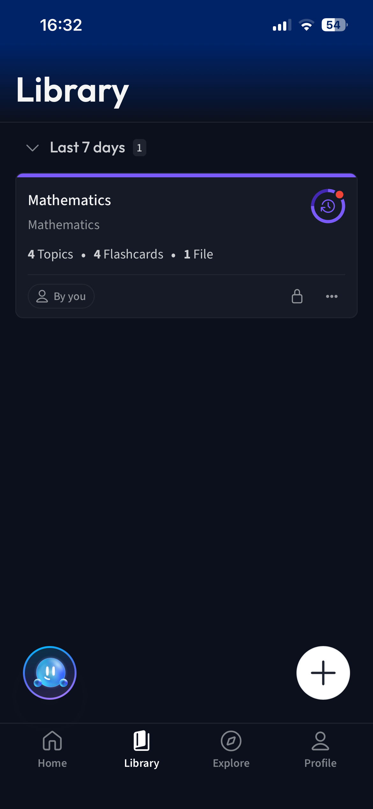
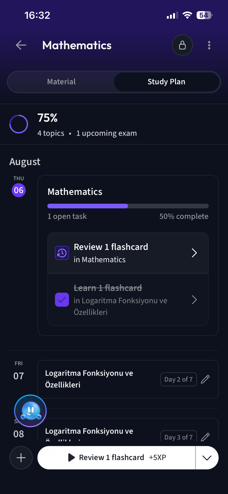
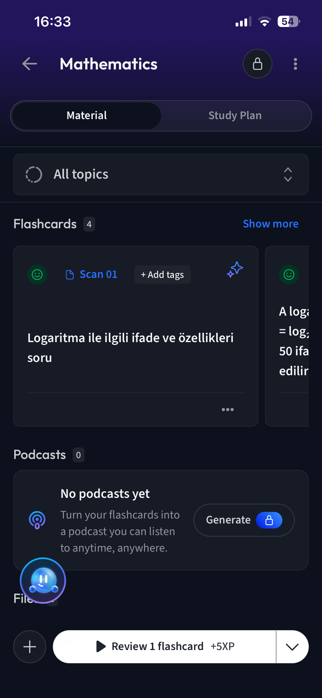
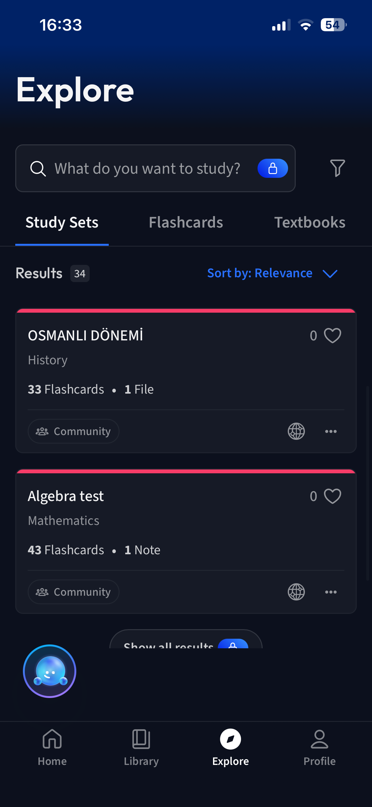
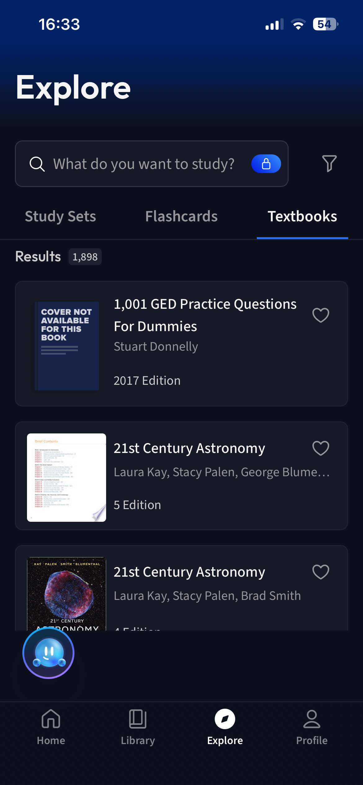
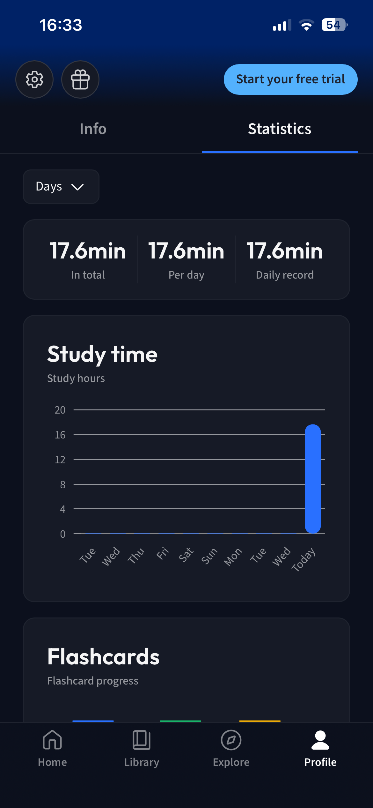
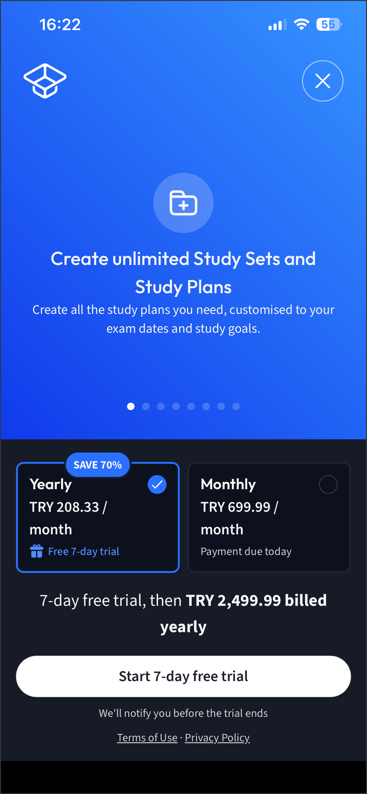
| Eksen | Knowunity | Astra AI | Vaia | Madlen Okul |
|---|---|---|---|---|
| Navigasyon | 5 sekme | 3 sekme + ızgara | 4 sekme | Tab bar yok |
| AI yerleşimi | Tek sekmede (Chat) | Sor + composer bağlamı | Home sohbet + yüzen karakter | Araç bazlı dağılmış |
| Karakter | Knowie, her adımda konuşuyor | Yok, yerine emoji | Mavi damla, kalıcı yüzen | Var, ağırlıklı Kurslar'da |
| Onboarding | 8+ adım, hedef + engel + widget + app ikonu | Temel + okul + hedef, üstüne Harvard sosyal kanıtı | Basics → tur → materyal → ilk quiz | Yok. B2B, bilgi okuldan |
| Gamification | Streak + XP + Leaderboard + Energy | Streak + davet coin'i | Streak + Level + XP butonun içinde | Level (Status) + XP |
| İkonografi | Karar ekranında satır bazlı renkli, navigasyonda nötr | Dekoratifte emoji, çekirdekte outline | Outline, mono | Outline |
| Tema | Koyu lacivert | Siyah + gradient | Cihaza uyumlu, varsayılan açık | Warm-cream / açık |
| Widget | Var, onboarding'de kuruluyor (chat + kamera + mic) | Yok | Yok | Yok |
| Materyalsiz üretim | Var | Yok, dosya zorunlu | Var | Var, kazanım tabanlı |
| Topluluk / UGC | Yalnızca tüketim | Öğrencilerin kurduğu sınıflar | Community study sets | Yok |
| Öğretmen bağı | Yok | Yok | Yok | Var, ürünün temeli |
| Aylık fiyat | ₺100 | ₺770 / ₺2.550 | ₺699,99 | B2B |
| Yıllık fiyat | ₺430 | %58 indirim | ₺2.499,99 | B2B |
| Deneme / garanti | yok | Para iadesi + ebeveynden ödeme | 7 gün deneme | yok |
| Odak yönetimi | Study Timer + uygulama bloklama | Odaklanma Modu (Plus) | Sadece istatistik | Yok |
Knowunity ana ekran widget'ını onboarding'in içinde kurduruyor: chat, kamera, mikrofon. Bizde hiç yok. Kamera kısayolu doğrudan soru çözücüye açılsın ki öğrenci uygulamayı açmadan soruyu fotoğraflasın. Üç rakipten sadece birinde var, en yüksek görünürlük kazancı.
"▶ Review 1 flashcard +5XP": ödül ayrı rozet değil, butonun parçası. Bizde XP zaten var ama kazanç anı görünmüyor. Yeni sistem gerekmiyor, mevcut XP'yi mevcut butonlara yazmak yeterli.
Bizde sticky davranış zaten var; eksik olan form. Onlarınki içeriğin üstünde yüzen, kenarlardan kopmuş pill, sağında tamamlanma bölmesi. Salt görsel değişiklik, mantık dokunulmadan.
Üç sekme + ⠿ butonu; ikincil her şey tek alt sayfada. Madlen Okul'da tab bar hiç yok, bu yapı sıfırdan tab bar kurmadan hiyerarşi kazandırır.
Knowunity'nin asıl üstünlüğü tek tek bileşenleri değil, hiçbir ekranın sistemden sapmaması: aynı renk, aynı radius, aynı kart, aynı karakter. Astra'da bu disiplin yok ve kart yapıları ile boşluklar ekran ekran oynuyor, fark hemen görülüyor. Madlen Okul'da da bütün ekranların tek ve tutarlı bir tasarım sisteminde olması gerekiyor; aşağıdaki maddelerin hiçbiri bu zemin oturmadan kalıcı kazanç vermez.
Önce boş durum, sonra özelliğin ne yaptığı, kilit en son ve tam eylem butonunun üstünde. Kilitli özelliklerimizde aynı sıra doğrudan uygulanabilir.
Karakterimiz var ama ağırlıklı Kurslar'da. Uyarlama tüm ekranları doldurmak değil: kullanıcının seçim yaptığı her ekranda karakteri konuşturmak.
Plan liste değil takvim: güne bağlı görev, "Day 2 of 7" rozeti, düzenleme kalemi. Planı dayatma olmaktan çıkarıp taahhüde çeviren detay.
Hazır içerik kütüphane değil kapasite göstergesi, boş sayaç davetin kendisi. Üretim araçlarımızda aynı kurgu kullanılabilir.
Energy: okulun satın aldığı üründe öğrenciyi kısıtlamak ters sinyal. Leaderboard sekmesi: sınıf içi açık karşılaştırma okul bağlamında hassas, ayrıca en pahalı yeri en az kullanılana vermek. App ikonu: saf B2C taktiği, okul dağıtımında karşılığı yok.
Astra'da imkansız. Müfredat ve kazanım tabanlı üretimimiz net ve savunulabilir üstünlük, ama şu an ürün anlatısında bu netlikte durmuyor.
Üçü de saf B2C. Astra'da "Sınıf" var ama sınıfları öğrenciler kuruyor. Üçünün de yapısal olarak giremeyeceği alan, çünkü girmek iş modelini değiştirmek demek.
Bilgi okuldan geldiği için onboarding'imiz yok ve bu avantaj. Ama Knowunity'nin topladığı şey bilgi değil niyet: hedef, engel, taahhüt. Bunlar okuldan gelmiyor.